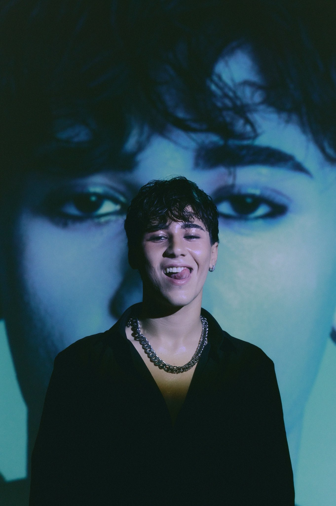
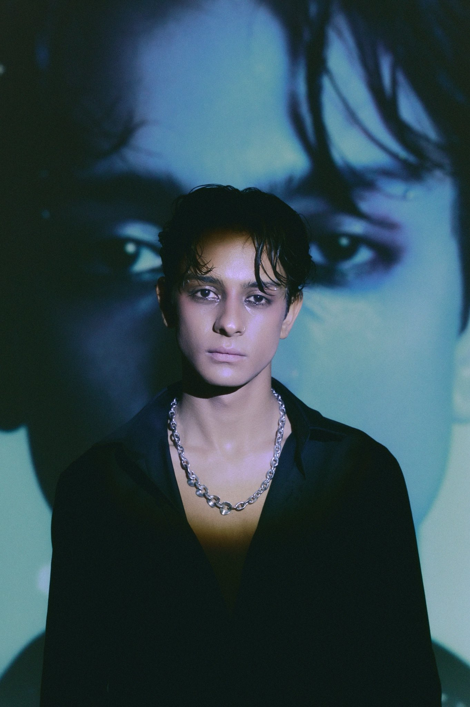
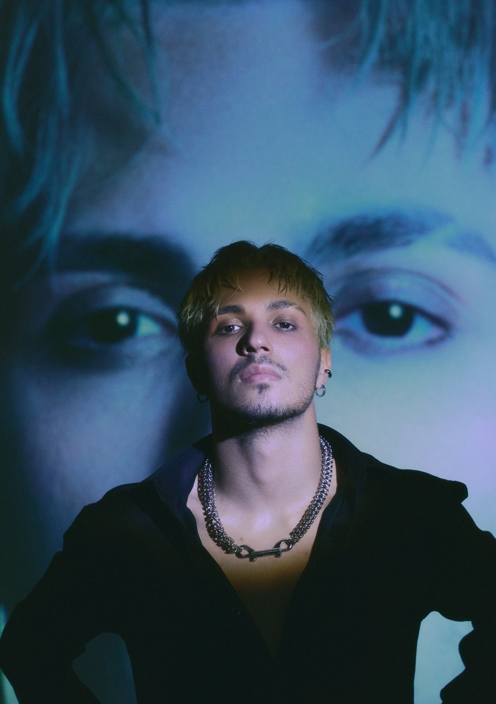
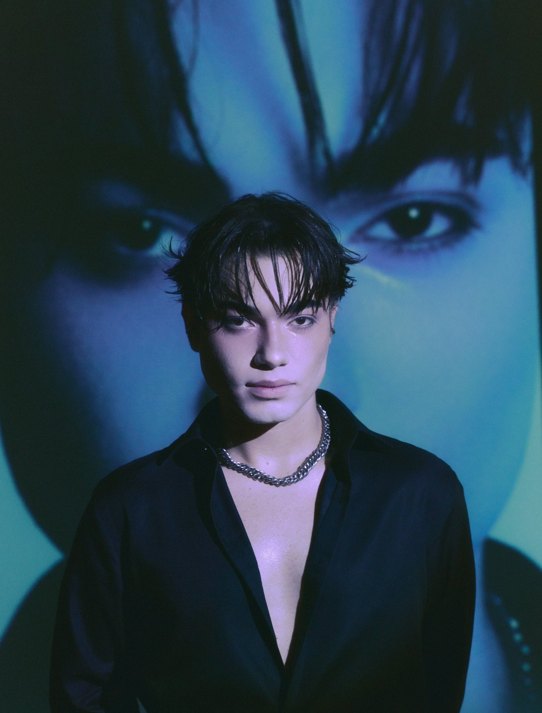
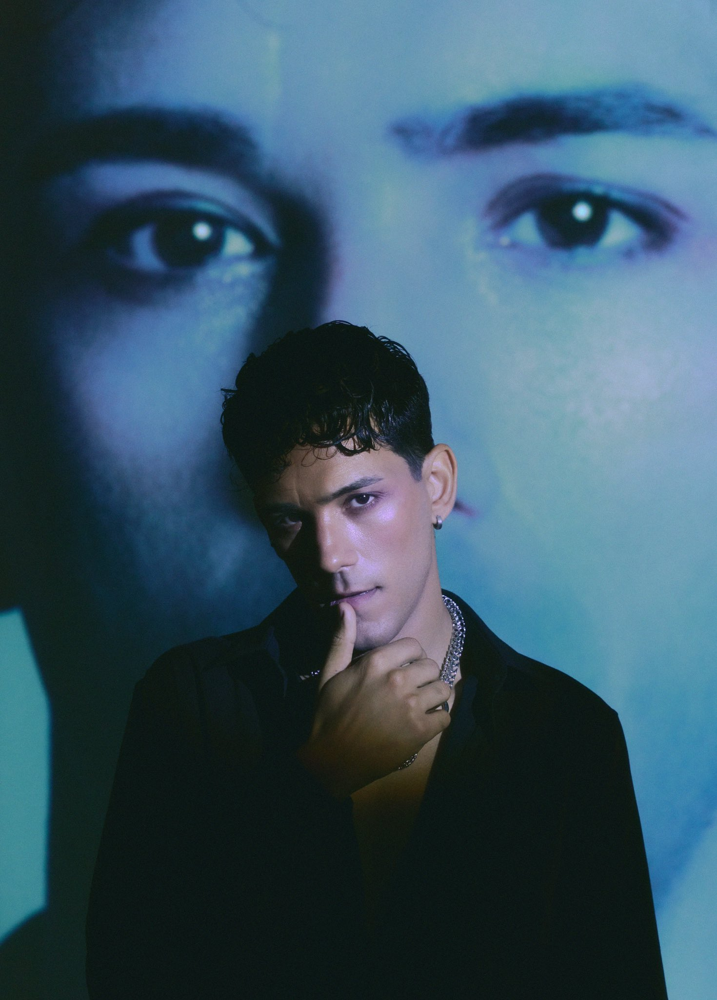
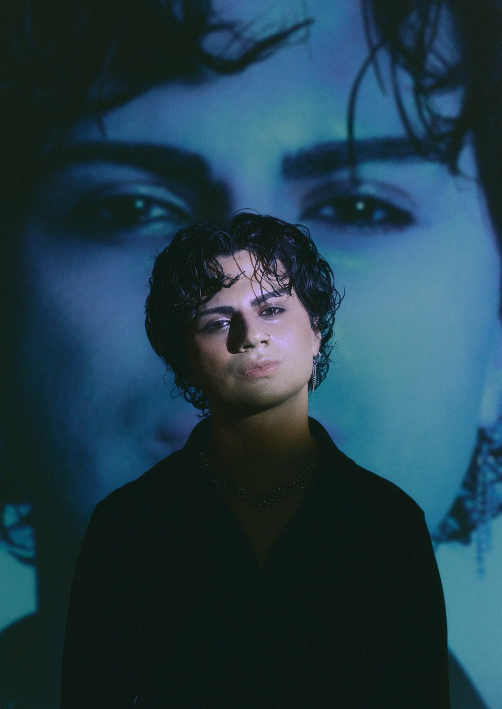
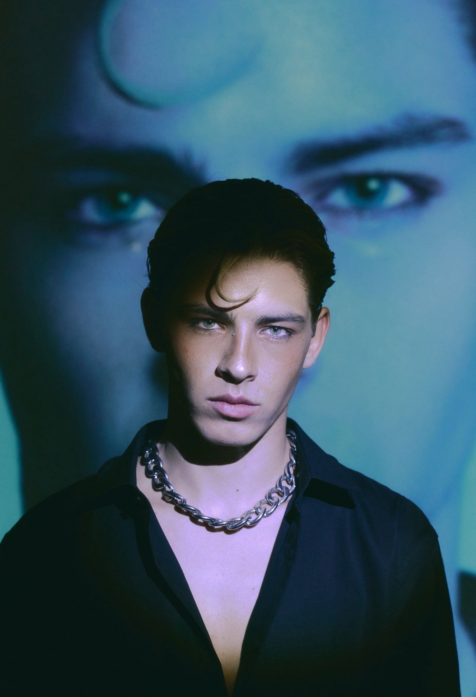
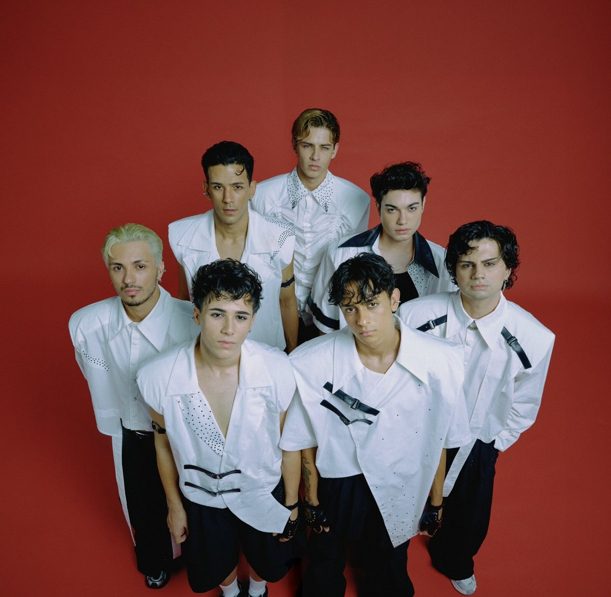

DEBUT SINGLE · 31.07.2026
CRUSH!
CRUSH!
plağını çal.
Kapağa dokun. Plak kılıftan çıksın, pikaba yerleşsin ve CRUSH'ın ilk single'ı çalmaya başlasın.
♡
✧
✦
KAPAĞA
DOKUN! →
DOKUN! →
33⅓45
YEDİ KALP. TEK NABIZ.
TÜMÜNÜ GÖR →
E
A
B
M
O
B
MVİDEOLAR
TÜMÜNÜ GÖR →
CRUSH · 2026
HİKAYEMİZ · 2026
Yedi farklı yol,
Yedi farklı yol,
tek bir CRUSH.
CRUSH'ın hikâyesi tek bir gecede değil; Idol House Türkiye boyunca geçen aylarca eğitim, prova ve sahne deneyimiyle başladı. Büyük finalde Efe, Arda, Miraç, Oğuzhan, Batu, Barış ve Milan aynı kadroda buluşunca yarışmanın sonu onlar için yeni bir başlangıca dönüştü.
Yedi farklı karakter, farklı müzik zevkleri ve farklı sahne enerjileri artık aynı isim altında hareket ediyor. 31 Temmuz 2026'da yayımlanan “CRUSH!”, grubun yarışma döneminden çıkıp kendi hikâyesini anlatmaya başladığı ilk resmî adım oldu.
Idol House'taki performanslar hâlâ bu hikâyenin arşivi; ama CRUSH'ın asıl dünyası bundan sonra yazılıyor. Sahne, dans, müzik ve bolca kaosun ortasında değişmeyen tek şey ise yedi kişinin aynı ritimde buluşması: yedi kalp, tek nabız.
07 ÜYE31.07 DEBUT01 İLK SINGLE
CRUSH MEMBERS · 01—07
Yedisi bir arada.
Yedisi bir arada.
Birini yakından tanı.
01/07
← → Okları kullan · Fotoğraf alanında sağa/sola kaydır · Noktalardan seç
CRUSH EVRENİ · VIDEO ARCHIVE
Arşivi çevir.
Official M/V hariç CRUSH kanalındaki backstage, reaction ve vlog içerikleri. Kartı merkeze getir, oynat ve siteden ayrılmadan izle.
01/04
 ▶BACKSTAGE
▶BACKSTAGE
01 · DEBUT ERA
Debut Photoshoot Backstage
İlk fotoğraf çekiminin kamera arkası.
 ▶REACTION
▶REACTION
02 · REACTION
CRUSH! MV Reaction
Grubun klibi ilk kez birlikte izlediği anlar.
 ▶MV VLOG
▶MV VLOG
03 · BEHIND
CRUSH! MV Vlog
Müzik videosu setinin perde arkası.
 ▶TEASER
▶TEASER
04 · ARCHIVE
CRUSH! Teaser
Debut öncesi yayımlanan kısa teaser.
← → Oklarla geç · Kartları sürükle · Merkezdeki karta tıkla
AĞUSTOS 2026 · İÇERİK TAKVİMİ
CRUSH ajandası.
Takvim güncel tarihe göre kendini otomatik yeniler. Geçmiş içerikler yayınlandı olarak işaretlenir; sıradaki içerik ve bugün/yarın durumları otomatik vurgulanır.
SIRADAKİ
13
AĞUSTOS
YARIN
—01 / 06
11
AĞUSALI
CRUSH!
Lansman Vlog
Yeni dönem başlıyor.
—02 / 06
13
AĞUPERŞEMBE
CRUSH!
Dans Pratik Videosu
Practice room.
—03 / 06
15
AĞUCUMARTESİ
CRUSH!
Gözü Kapalı Dans Challenge
Challenge mode.
—04 / 06
17
AĞUPAZARTESİ
RUSH
Bölüm 1
Yeni seri.
—05 / 06
19
AĞUÇARŞAMBA
CRUSH!
Ritme Göre Dans
Beat challenge.
—06 / 06
21
AĞUCUMA
CRUSH!
Rolleri Değiştirdik Dans Challenge
Final drop.
YayınlandıBugünSıradaki
KONSER
CRUSH sahneye çıkıyor.
İlk konser serisi, İstanbul’da iki gece üst üste. Maximum Uniq Açıkhava’da CRUSH’ın ilk büyük canlı buluşması.
12EYLÜL
CUMARTESİ
CUMARTESİ
1. GECE · 21:00
Maximum Uniq Açıkhava
İstanbul · Ayakta düzen
TÜKENDİBubilet’te Gör ↗
13EYLÜL
PAZAR
PAZAR
2. GECE · 21:00
Maximum Uniq Açıkhava
İstanbul · Ayakta düzen
TÜKENDİBubilet’te Gör ↗
Bubilet’in güncel etkinlik sayfasında iki gece de tükendi olarak görünüyor.
HABERLER
CRUSH gündemi.
Grubun ilk çıkış döneminden öne çıkan son gelişmeler.
12–13EYL
KONSER · GÜNCEL
İlk konserlerin iki gecesi de tükendi.
Maximum Uniq Açıkhava’daki 12 ve 13 Eylül konserleri Bubilet’te tükendi olarak görünüyor. CRUSH’ın ilk büyük konser buluşması iki gece üst üste gerçekleşecek.
Etkinliği gör ↗06AĞU
YOUTUBE · VIDEO
CRUSH! MV Reaction yayında.
Üyelerin kendi debut kliplerini birlikte izlediği reaction videosu resmî YouTube kanalında yayınlandı.
Videoyu izle ↗07AĞU
RADYO · KEŞFET
CRUSH!, Radyo D Keşfet listesinde.
Grubun ilk single’ı “CRUSH!”, Radyo D’nin yeni müzik keşif seçkisinde yer aldı.
Paylaşımı gör ↗